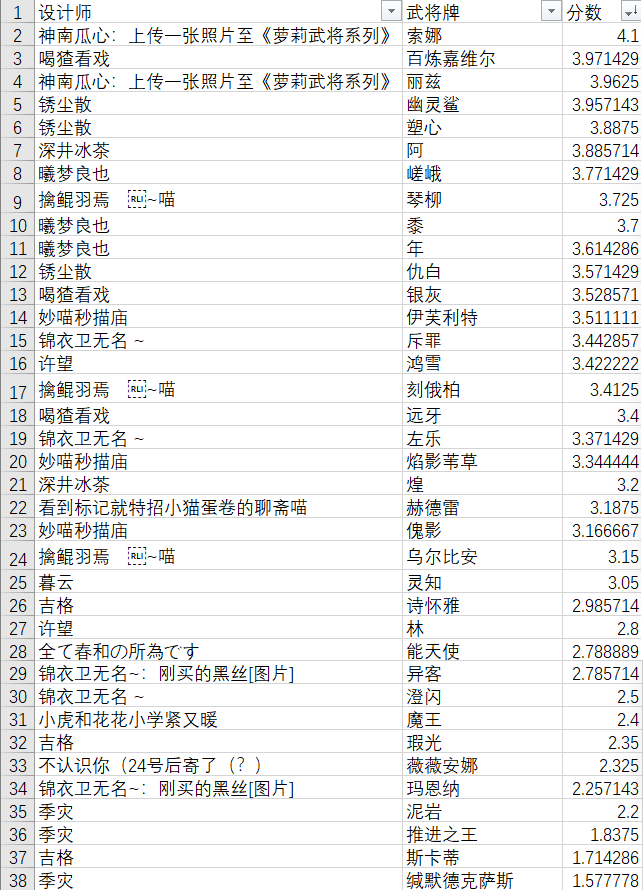

九月六星设计大赛
其一
比赛时间：2024.9.10~2024.10.10，其中9.10~9.30为设计阶段，10.1~10.10为评判阶段
——————————————
设计阶段：
参赛选手寻找群主抽取三名角色，并以此设计任意张武将牌。对于抽到的角色，可前往另一公告查看。
设计成品由群友大众审核、交流、讨论，合格者上传至相册《九月六星设计大赛参赛作品》。上传至相册时，需附注思路说明。
设计要求：
1.技能要求有思路符合角色，不得抄袭；
2.只能使用比赛时间内新设，不能使用以前的成品参赛；
3.以单局单挑、军争牌堆为环境，强度在界孙权到神甘宁之间，不得进入仙界；
4.技能数不超过三个。
——————————————
评判阶段：
同时进行实战赛评判和设计赛评判。
实战赛赛制：
首先为每名参赛选手随机分配编号，然后一号与二号、三号与四号、……以此类推，分别进行一局单挑，胜者晋级。所有选手比赛完毕后，为晋级选手重新随机编号并重复此流程，直至决出冠军。
每局单挑前，双方掷骰子比出大小，点大者先手选将并先手出牌。选将时，两名选手依次从自己本次的参赛作品中选择一名作为本局的武将。
每胜利或轮空一局，该选手实战分数+1。
比赛由赞助商@伯约何在担任裁判，进行直播并帮助玩家对牌进行操作。
具体比赛时间根据选手和赞助商的空闲时间决定。
其二
设计赛赛制：
所有群友对参赛相册内的作品进行评分（1~5，可以使用任意小数位数），不自评。然后每名参赛选手对其所有作品的评分计算平均数，得到设计分数（保留两位小数）。
评分标准：1分“有大问题”，2分“有些瑕疵”，3分“平平无奇”，4分“眼前一亮”，5分“旷世奇才”。
注意，请在相册内评分，不要在动态内评分，这俩是分开的，不统一的话统计起来会很麻烦。所以对动态的评分一律无效。
按照实战分数：设计分数=2：3的权重对每名参赛选手计算加权平均数，得出选手最终得分（保留两位小数）。
对于最终得分，如果前四出现重复分数，则进行一局单挑或群友重新投票（每人一票）决定排名。
————————————
比赛奖励：
第一名：￥100+选择任意一名群友或自己当管理员
第二名：￥50
第三名：￥30
第四名：￥20
先驱奖：￥6
————————————
比赛由@伯约何在 提出并提供奖金支持，谢谢伯约何在喵
选手
目前参赛人员（大概率）：
吉格=浊心斯卡蒂-琳琅诗怀雅-瑕光
妙喵秒描庙（已换）=傀影-焰影苇草-伊芙丽特
深井冰茶（已换）=煌-维什戴尔-阿
季灾=推进之王-泥岩-缄默德克萨斯
无名（已换）=左乐-斥罪-澄闪
神南瓜心（已换）=焰尾-夜莺-铃兰
喝猹看戏（已换）=百炼贾维尔-银灰-远牙
锈尘散=塑心-归溟幽灵鲨-仇白
陆乐乐=陈-令-锏
InFinte[L]（已换）=莫斯提马-异客-玛恩纳
？？？？？？？（已换）=艾雅法拉-森蚺-缪尔塞思
擒鲲羽焉=琴柳-乌尔比安-刻俄伯
鸠=魔王-提丰-赫拉格
许望（已换）=鸿雪-艾莉妮-林
曦梦Rusunro=年-黍-嵯峨
暮云=涤火杰西卡-白铁-灵知
衫雨落=安洁莉娜-阿斯卡伦-菲亚梅塔
ArcherTyphon=娜仁图亚-早露-黑
不认识你（已换）＝薇薇安娜-水陈-霍尔海雅
春和（已换）=白铁-麦哲伦-能天使
聊斋=赫德雷，佩佩，伺夜
其三
本规则为现行版，与其一
、其二
冲突者以其三
、其四
为准。
2024.10.1~2024.10.10为评审阶段，同时进行设计赛评判和实战赛评判。
————————————
设计赛细则：
https://docs.qq.com/sheet/DZnFUdVVhVGpiYVZG?tab=BB08J2
前往此链接，在共享表格中，每位武将的对应行进行打分，并且不需要每位评委独占一列，有空就填即可。请各位不留情面，可以极端一点，该是多少就多少，以便拉开分数差距。表格中只填写最终的评分，评价和分数计算过程可以写在相册里。为方便统计，相册里的分数不予记录，只有表格里的分数是有效的。
对于拥有足够数量评分的作品，去掉超过其他评分0.5分（不含0.5分）的最高分和最低分各一个。
参赛作品的最终评分取平均。
其四
实战赛细则：
在战场开放的时间，所有玩家可以向任意玩家发起决斗，双方同意后开始进行一场比赛。
所有参赛武将混合在一起，组成比赛将池。两位选手决定好先后顺序，然后各自抽五张武将并展示，若其中有双方的设计则洗回将池重抽；然后双方轮流将对方的一张武将禁用直到两人手上均为三张。然后各自从自己的三张武将中暗选一张作为本场比赛的武将，然后开始游戏。先手玩家第一轮摸牌阶段少摸一张牌。被抽到的武将移除将池；将池数量不足以支撑一场比赛时，重新把所有武将加入将池。
一场比赛结束后，胜方武将牌分数+1。
最终实战分采用赋分制：当所有比赛结束之后，所有武将进行排名，若第一名超过第二名不少于2分则第一名赋0分，然后对所有0分武将赋0分，有分的1~5拉匀。
————————————
最终评分：
实战分：设计分按2：3计算加权平均数。设计师的最终分数取其所有作品的最高分。
每个人可以更换一个干员（如果没有看过剧情或不愿意设计这个角色）
其五
比赛完美落幕！热烈祝贺以下获奖设计师：
冠军：神南瓜心：上传一张照片至《萝莉武将系列》
亚军：喝猹看戏
季军：锈尘散
殿军：深井冰茶
先驱：季灾
比赛由@群主小南梁！发起并提供奖金支持，谢谢伯约何在喵
附注：
由于实战分均为0分、1分和极少量2分，无参考价值，故比赛最终成绩只计算设计分。武将排行榜见附图。
